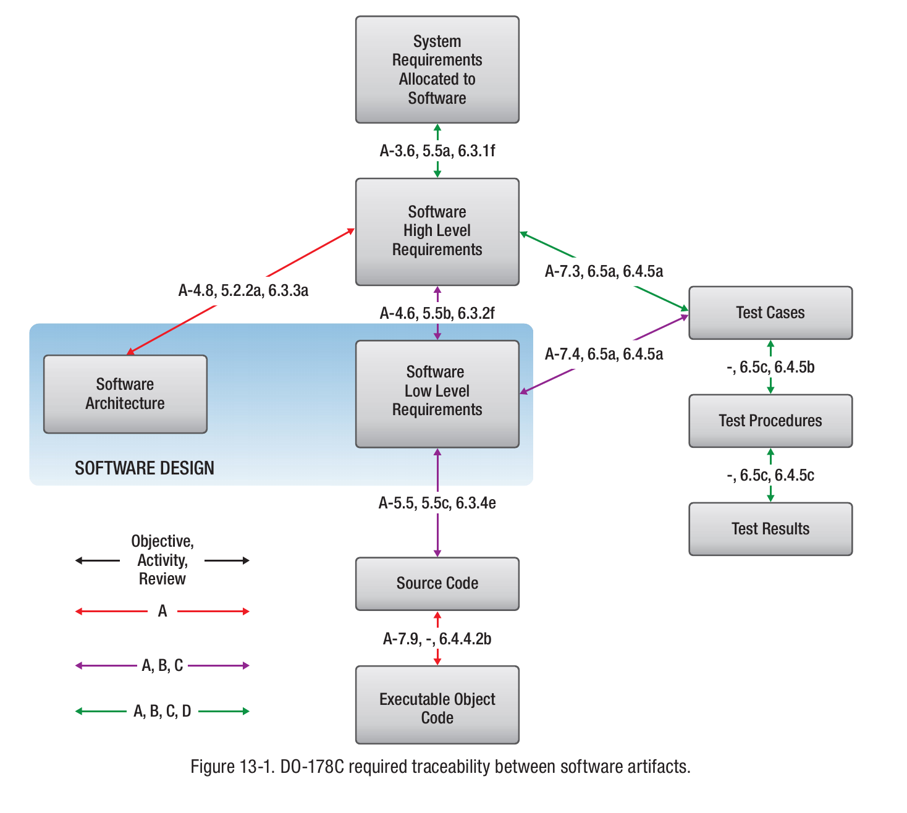

07. Quản lý kiểm soát phần mềm hàng không
Phần mềm máy bay không nhìn thấy, không sờ được, nhưng phải được đối xử như mọi chi tiết máy bay khác. Một thay đổi phần mềm chưa được phê duyệt có thể gây mất máy bay. Module này trả lời bốn câu hỏi: phần mềm hỏng nặng đến đâu thì được coi là nguy hiểm (5 mức A đến E), chuẩn DO-178B/C bắt buộc những tài liệu và truy vết nào, phần mềm và dữ liệu được nạp lên máy bay ra sao (FLS, LSAP, UMS, OSS, DFLD), và làm sao biết tệp nạp không bị hỏng (checksum, CRC), kèm hai demo chạy trực tiếp.
CO/CLO: CLO3Thời lượng (ước tính): ≈ 0,9 giờ lý thuyết6 slideCâu hỏi: 50 (20 gốc)
Slide: Software management control (EASA Part-66 5.13) tr.1-6 · Tooley Ch.13 (tr.207-217) · Floyd §2-12 mã lỗi; §11-11 checksum · Bản đồ nội dung sách
Tooley: Ch.13 Software (p.207-217): 13.1 classification, 13.2 certification, 13.3 upgrading (FLS, LSAP, UMS, OSS, DFLD, EEC loading with PDL), 13.4 data verification; 7 MCQs; plus Ch.15 MCQ on navigation database update
Floyd: Ch.2 section 2-12 Error Codes (parity, CRC, Example 2-41; p.109-114) và Ch.11 section 11-11 (kiểm tra ROM bằng checksum, Hình 11-74 và 11-75). Floyd KHÔNG có nội dung về DO-178, phân loại mức phần mềm hay nạp phần mềm máy bay: chỉ khớp ở khía cạnh kiểm tra lỗi dữ liệu.
Nguồn chính là tài liệu 6 trang EASA Part-66 Module 5.13 (13.1 đến 13.6, gồm Hình 13-1 và 6 câu hỏi có đáp án) cùng Tooley ch.13. Module có 2 demo tương tác (checksum và CRC, bộ chọn mức DAL).
- Vì sao phải kiểm soát phần mềm
- Năm mức nghiêm trọng A đến E
- DO-178B/C và truy vết
- Nạp phần mềm và dữ liệu lên máy bay
- Kiểm tra tính toàn vẹn dữ liệu
📷 Slide gốc của giảng viên (bấm để phóng to)
6 slide


Bài giảng
Vì sao phải kiểm soát phần mềm
- Hàng triệu dòng mã chạy đồng thời trên hàng chục máy tính; mã cũng như dữ liệu và hệ điều hành nhúng đều được coi là phần mềm
- Phần mềm điều khiển bay hỏng lúc tiếp cận IFR trong tầm nhìn bằng 0 là kịch bản mà quy trình kiểm soát sinh ra để ngăn
- Chỉ thị khả phi (Airworthiness Directive) có thể yêu cầu sửa phần mềm, ví dụ lỗi EEC làm mất thông số động cơ và đóng băng cần ga
Phần mềm là một bộ phận máy bay
Theo Tooley (ch.13), phần mềm gồm mã thực thi (chương trình), dữ liệu mà chương trình dùng và cả hệ điều hành nhúng. Tất cả đều cần nâng cấp định kỳ và sửa lỗi phát sinh trong khai thác. Hậu quả hỏng phần mềm trải từ không đáng kể đến thảm hoạ (hỏng hệ avionics lớn, lỗi động cơ).
📖 Giải thích cho người mới bắt đầu
Điểm khác với phần mềm máy tính cá nhân: một bản cập nhật "nhỏ" không thể tự cài. Nó phải đi qua cùng thủ tục phê duyệt như một thay đổi phần cứng, vì Tooley coi phần mềm là một bộ phận máy bay (aircraft part). Bài giảng đưa ra kịch bản để hình dung: phần mềm điều khiển bay hỏng lúc tiếp cận IFR trong tầm nhìn bằng 0.
Chỉ thị khả phi đòi sửa phần mềm: ví dụ thực
Hình 13.1 của Tooley trích một Airworthiness Directive (ATA 73, nhiên liệu và điều khiển, sửa phần mềm EEC). Đã có sáu sự kiện trong khai thác: mất hiển thị thông số động cơ ở buồng lái kèm đóng băng cài đặt công suất của động cơ đó. Điều tra tìm ra nguyên nhân là lỗi phần mềm động cơ. Đánh giá an toàn kết luận có thể gây lực đẩy bất đối xứng nguy hiểm nếu xảy ra lúc chạy đà cất cánh và phi công cố hủy cất cánh. Chỉ thị yêu cầu đưa vào phần mềm động cơ bản sửa.
📖 Giải thích cho người mới bắt đầu
Ví dụ cho thấy mối liên hệ giữa ba thứ thường bị tách rời: lỗi mã nguồn, đánh giá an toàn và văn bản pháp lý. Lỗi nằm ở mã; mức nguy hiểm được xác định bằng phân tích hậu quả (lực đẩy bất đối xứng khi cất cánh); và hành động bắt buộc là một chỉ thị chứ không phải khuyến cáo. Vì vậy mọi bản sửa phải qua kiểm soát cấu hình.
Năm mức nghiêm trọng A đến E
- A thảm hoạ (mất máy bay), B nguy hiểm, C đáng kể, D nhẹ, E không ảnh hưởng
- Xác suất hỏng mỗi giờ bay: A dưới 10⁻⁹, B từ 10⁻⁹ đến 10⁻⁷, C từ 10⁻⁷ đến 10⁻⁵, D trên 10⁻⁵
- Điều khiển bay và dẫn đường là mức A; giải trí trên chuyến bay là mức E
- Mức khác nhau thường không chạy chung bộ xử lý, trừ khi có phân vùng được duyệt như ARINC 653
Năm mức phần mềm A đến E
| Mức | Loại hỏng | Mô tả | Xác suất/giờ bay |
|---|---|---|---|
| A | Thảm hoạ | Mất máy bay, thương vong | dưới 10⁻⁹ |
| B | Nguy hiểm/nặng | Phi hành đoàn không làm được nhiệm vụ; thương tích nặng hoặc chết cho một số người | 10⁻⁹ đến 10⁻⁷ |
| C | Đáng kể | Khối lượng việc làm giảm hiệu quả phi hành đoàn; khó chịu, có thương tích | 10⁻⁷ đến 10⁻⁵ |
| D | Nhẹ | Trong khả năng phi hành đoàn; gây bất tiện | trên 10⁻⁵ |
| E | Không ảnh hưởng | Không ảnh hưởng | không áp dụng |

📖 Giải thích cho người mới bắt đầu
Cách nhớ: mức chữ cái càng đầu bảng thì xác suất cho phép càng nhỏ. Mức A phải "cực kỳ không thể xảy ra" (dưới một phần một tỉ mỗi giờ bay), mức D chỉ cần "có thể xảy ra". Các ngưỡng đọc từ ảnh trang sách (ảnh bên dưới), khớp tiêu chuẩn tương ứng. Tooley chia mức theo khối lượng việc tăng thêm cho phi hành đoàn và khả năng bay khi mất dữ liệu điều khiển hoặc thông tin tự động.
Ví dụ ứng dụng theo mức (Tooley Bảng 13.2)
| Mức | Ứng dụng điển hình |
|---|---|
| A | AHRS, GPS/ILS/MLS/FLS, SATNAV, VOR/ADF |
| B | TCAS, bộ phát đáp ADS-B, màn hình bay |
| C | DME, thoại VHF |
| D | Cân bằng tự động AHRS, CMC/CFDIU, bộ nạp dữ liệu, radar thời tiết |
| E | Giải trí trên chuyến bay |
📖 Giải thích cho người mới bắt đầu
Ba câu hỏi chương 13 nằm ở đây: radar thời tiết là mức D (câu 4); phần mềm điều khiển động cơ điện tử là LSAP, loại phần mềm nạp được (câu 5); phần mềm mức C là loại mà hỏng có thể gây thương tích nhẹ cho hành khách hoặc tổ bay (câu 1). Lưu ý: màn hình bay ở mức B, nên đây là một phần lý do Module 06 nhấn mạnh DO-178 và DO-254 cho hệ thống hiển thị.
DO-178B/C và truy vết
- DO-178B/ED-12B (1992) do RTCA và EUROCAE công bố; FAA và EASA dùng làm hướng dẫn chứng nhận
- DO-178C (2011) thay DO-178B, kèm các phụ lục DO-330 (công cụ), DO-331 (mô hình), DO-332 (hướng đối tượng), DO-333 (phương pháp hình thức)
- Hình 13-1: mức A cần thêm hai trace đỏ; mức A đến C cần trace tím; mức A đến D cần trace xanh; mức E không cần
- Thay đổi phần mềm sau chứng nhận ở mức A, B, C phải được tổ chức thiết kế (DO) phê duyệt
Chứng nhận: phần mềm, phần cứng và an toàn hệ thống
Hình 13.2 của Tooley cho thấy vòng đời phần cứng và phần mềm gắn chặt với nhau: đổi cấu hình phần cứng luôn kéo theo đổi cấu hình phần mềm. Quy trình đánh giá an toàn (SAP, AMC 25.1309 và ARP 4761) chạy song song với quy trình phát triển hệ thống (ARP 4754); từ đó tách thành phát triển phần cứng (DO-254) và phần mềm (DO-178B).
Chứng nhận ban đầu yêu cầu tổ chức thiết kế (DO) chứng minh phần mềm đã được thiết kế, thử nghiệm và tích hợp với phần cứng theo DO-178B/ED-12B. Một kế hoạch quản lý cấu hình phần mềm (CMP) phải có hiệu lực suốt đời thiết bị.
📖 Giải thích cho người mới bắt đầu
Mối liên hệ với Module 06: ba tiêu chuẩn DO-160 (môi trường), DO-178 (phần mềm), DO-254 (phần cứng) là ba lớp chứng nhận của một thiết bị điện tử trên không. Test Your Understanding 13.1 của Tooley hỏi đúng điều này: CMP để làm gì và chuẩn nào áp dụng. Đáp án: CMP để nhận dạng phần mềm và kiểm soát thay đổi trong suốt đời thiết bị; chuẩn áp dụng là DO-178B/ED-12B (nay DO-178C).
Ai được sửa phần mềm sau khi chứng nhận?
Thay đổi sau chứng nhận với thiết bị ở mức A, B, C (thảm hoạ, nguy hiểm, đáng kể) không được thực hiện nếu chưa được DO phê duyệt. Vì vậy mọi nâng cấp và sửa đổi phần mềm chịu cùng thủ tục duyệt như sửa phần cứng. Mọi sửa đổi phải được nhận dạng và kiểm soát theo CMP; hướng dẫn có trong DO-178B/ED-12B và DO-178C/ED-12C (2011).
📖 Giải thích cho người mới bắt đầu
Câu trắc nghiệm 3 chương 13: CMP phải do DO liên quan lập và duy trì, không phải CAA/FAA hay nhà khai thác. Với mức D và E, quy tắc nới hơn, nhưng sách không nêu quy trình riêng cho chúng nên module này không suy diễn thêm.
DO-178B/ED-12B: chuẩn và tài liệu bắt buộc
"Software Considerations in Airborne Systems and Equipment Certification" do RTCA công bố năm 1992 (DO-178B) và EUROCAE (ED-12B). FAA và EASA dùng nó làm hướng dẫn chứng nhận để xét phần mềm có chạy tin cậy trên hệ thống máy bay không. Chuẩn đặt ra mức bảo đảm thiết kế dựa trên quy trình đánh giá an toàn và phân tích hiểm hoạ, xét hậu quả của một tình trạng hỏng trong từng hệ thống.
📖 Giải thích cho người mới bắt đầu
Đây là nội dung câu hỏi 13-2 của bài giảng (DO-178 là gì và vì sao quan trọng). Quan trọng vì nó là chuẩn thực tế (de facto) cho phần mềm an toàn trong hàng không; chứng nhận mức nào phụ thuộc hệ thống đó hỏng thì hậu quả ra sao.
Ngoài mã: những tài liệu phải có
Ngoài mã nguồn và mã đối tượng thực thi, chuẩn đòi hỏi tài liệu và sản phẩm vòng đời (câu hỏi 13-1): kế hoạch chứng nhận khả phi, kế hoạch bảo đảm chất lượng phần mềm, kế hoạch quản lý cấu hình phần mềm, quy trình kiểm soát cấu hình, chuẩn mã, chuẩn thiết kế, chuẩn yêu cầu, kế hoạch phát triển, kế hoạch kiểm chứng, tài liệu thiết kế, tài liệu yêu cầu, truy vết, test case và test procedure, kết quả kiểm chứng, hồ sơ bảo đảm chất lượng, hồ sơ quản lý cấu hình, báo cáo sự cố và bản tóm tắt thành tựu phần mềm.
📖 Giải thích cho người mới bắt đầu
Danh sách dài nhưng có logic: kế hoạch (làm gì), chuẩn (làm thế nào), sản phẩm (yêu cầu, thiết kế, mã), bằng chứng (test, kết quả, hồ sơ). Một kiểm toán viên cần cả bốn nhóm để tin rằng phần mềm được làm đúng cách, không chỉ chạy đúng một lần.
Mức A cho điều khiển bay và dẫn đường; ARINC 653
Điều khiển bay và dẫn đường là quan trọng cho chuyến bay nên cần chứng nhận Level A: hỏng có thể gây nhiều thương vong và mất máy bay. Hệ giải trí cabin ở đầu kia của phổ (Level E), trừ việc phi hành đoàn phải có thể ghi đè khi phát thanh. Thông thường các mức khác nhau không chạy trên cùng một bộ xử lý, trừ khi dùng sơ đồ phân vùng phần mềm được duyệt như ARINC 653.
ARINC 653 (Avionics Application Standard Software Interface) là đặc tả phân vùng không gian và thời gian trong hệ điều hành thời gian thực, cho một bộ xử lý chứa nhiều ứng dụng mức khác nhau. Dùng trong hệ IMA, nó cô lập chức năng quan trọng khỏi chức năng không quan trọng để một ứng dụng hỏng không kéo sập cả hệ IMA.
📖 Giải thích cho người mới bắt đầu
Hãy so với Module 05: ARINC 653 và AFDX cùng thuộc thế giới IMA. AFDX đảm bảo băng thông cho từng luồng bằng Virtual Link, còn ARINC 653 đảm bảo thời gian xử lý và bộ nhớ cho từng ứng dụng bằng phân vùng. Hai thứ cùng phục vụ một mục tiêu: lỗi ở phần ít quan trọng không được ảnh hưởng phần quan trọng.
DO-178C và các phụ lục
Khi DO-178B ra đời, phần lớn phần mềm viết tay. Về sau sinh mã tự động từ mô hình phổ biến, nên cần làm rõ ranh giới yêu cầu hệ thống cấp cao với yêu cầu phần mềm cấp thấp, và cần cách kiểm chứng phần mềm dựa trên mô hình (mô phỏng hoặc phương pháp hình thức có thể thay một phần thử nghiệm không). Vì vậy DO-178C ra đời năm 2011. Tháng 7 năm 2013 FAA ban hành AC 20-115C công nhận nó.
| Phụ lục | Nội dung |
|---|---|
| DO-330 | Chứng nhận công cụ phần mềm |
| DO-331 | Phát triển và kiểm chứng dựa trên mô hình |
| DO-332 | Công nghệ hướng đối tượng |
| DO-333 | Phương pháp hình thức |
📖 Giải thích cho người mới bắt đầu
Đây là đáp án câu 13-5. Các công cụ như MATLAB, Simulink và Embedded Coder được dùng để hỗ trợ phát triển dựa trên mô hình theo DO-178C. Ý chính: khi quy trình làm phần mềm thay đổi (từ tay sang mô hình), chuẩn phải được cập nhật để quy tắc vẫn có nghĩa.
Truy vết yêu cầu theo mức (Hình 13-1)
Hình 13-1 vẽ truy vết bắt buộc giữa các sản phẩm chứng nhận theo DO-178C. Đỏ: chỉ phần mềm mức A. Tím: mức A, B, C. Xanh: mức A đến D. Mức E: không cần truy vết vì không quan trọng. Mã đối tượng thực thi mức A phải "bền vững" (robust) với yêu cầu phần mềm, tức đáp ứng đúng với đầu vào và điều kiện bất thường.

📖 Giải thích cho người mới bắt đầu
Đọc kỹ hình (ảnh cắt từ bài giảng): có hai mũi tên đỏ, chứ không phải một. Mũi tên thứ nhất nối kiến trúc phần mềm với yêu cầu cấp cao (A-4.8, 5.2.2a, 6.3.3a); mũi tên thứ hai nối mã nguồn với mã đối tượng thực thi (A-7.9, 6.4.4.2b). Đáp án in của câu 13-6 chỉ nhắc mũi tên thứ hai, nên chưa đầy đủ. Mũi tên tím: yêu cầu cấp cao với cấp thấp, cấp thấp với mã nguồn, cấp thấp với test case. Mũi tên xanh: yêu cầu hệ thống với yêu cầu cấp cao, yêu cầu cấp cao với test case, test case với test procedure và test result.
Demo: mỗi mức DAL đòi những trace nào?
Chọn một mức trong ô bên dưới trang (Demo 2) để xem xác suất cho phép, ứng dụng điển hình và các trace bắt buộc. Gợi ý thử: so mức A với mức B để thấy đúng hai trace đỏ khác biệt, rồi so mức B với mức C để thấy chúng cùng một tập trace.
Quy tắc rút ra từ hình 13-1: số trace bắt buộc tăng khi mức nghiêm trọng tăng: D (xanh) nhỏ nhất, B và C (xanh và tím) bằng nhau, A (đỏ, tím, xanh) lớn nhất.
📖 Giải thích cho người mới bắt đầu
Demo đọc dữ liệu từ chính hình 13-1 chứ không đoán. Nếu bạn thấy kết quả của demo khác hình, hình là bản gốc.
Nạp phần mềm và dữ liệu lên máy bay
- FLS (field loadable software) gồm LSAP, UMS và OSS; DFLD là dữ liệu nạp được (cơ sở dữ liệu của FMC, TAWS, IMA)
- LSAP là bộ phận máy bay cần phát hành có kiểm soát, đi kèm EASA Form 1 hoặc FAA 8130-3
- Phân phối bằng phương tiện lưu trữ, truyền điện tử bằng thiết bị nạp, hoặc phân phối điện tử; nghi ngờ thì cách ly
- Quy trình nạp EEC bằng PDL gồm 10 bước, tối đa 3 lần thử nếu hỏng
Phần mềm nạp được tại hiện trường (FLS)
FLS là mã thực thi nạp vào máy tính khi đang lắp trên máy bay, do thợ cơ khí/kỹ thuật viên nạp theo quy trình trong sổ tay bảo dưỡng. Ba loại chính:
- LSAP (loadable software aircraft part): phần mềm để đáp ứng yêu cầu khả phi hay vận hành; không thuộc thiết kế được duyệt nên là một bộ phận máy bay cần hồ sơ phát hành chính thức. Ví dụ: EEC, DFDAU, ECU của APU, máy tính dẫn hướng bay (FGC).
- UMS (user modifiable software): do chủ sở hữu chứng chỉ loại tuyên bố là cho phép sửa trong ràng buộc chứng nhận; nhà khai thác thường tự nâng cấp. Ví dụ: ACMS, IFE.
- OSS (option selectable software): các thành phần đã duyệt, nhà khai thác kích hoạt trong biên giới do chủ chứng chỉ quy định. Ví dụ: bộ IMA.
📖 Giải thích cho người mới bắt đầu
Câu trắc nghiệm 6 chương 13: OSS và UMS là các lớp cụ thể của FLS. Mẹo phân biệt theo ai được thay đổi: LSAP chỉ thay qua phát hành chính thức; UMS nhà khai thác sửa được trong khuôn khổ; OSS nhà khai thác chỉ bật tắt các tuỳ chọn có sẵn đã duyệt.
Dữ liệu nạp được (DFLD) và vì sao phải đối xử như mã
DFLD là dữ liệu nạp được vào cơ sở dữ liệu của phần cứng đích. Bản thân cơ sở dữ liệu là mục nhúng nằm trong phần cứng và không nạp được; việc "nạp" chỉ là ghi dữ liệu mới hoặc ghi đè dữ liệu cũ từ tệp. Dạng dữ liệu có thể là nhị phân tự nhiên (gọn nhất nhưng người không đọc được), BCD hoặc hex (dễ đọc hơn).
Cập nhật cơ sở dữ liệu thường ảnh hưởng hiệu năng máy bay; dữ liệu sai hoặc hỏng có thể gây hoạt động thất thường hoặc vượt giới hạn. Vì thế DFLD cần số hiệu duy nhất và hồ sơ phát hành riêng như mã LSAP. Ví dụ phần cứng: FMC, TAWS, IMA.
📖 Giải thích cho người mới bắt đầu
Test Your Understanding 13.4 của Tooley hỏi đúng điều này: vì sao DFLD phải được đối xử cẩn thận như FLS. Câu trả lời ngắn: vì dữ liệu hỏng làm chương trình tốt chạy sai. Ví dụ thực tế: cơ sở dữ liệu dẫn đường của FMS phải được cập nhật định kỳ (câu trắc nghiệm 9 của chương 15 ghi 28 ngày).
Phân phối và phát hành: Form 1, Certificate of Conformity
Ba cách phân phối: phương tiện lưu trữ (đĩa mềm, thẻ PCMCIA, CD-ROM, mô-đun thay thế OBRM), truyền điện tử (laptop, máy cầm tay hoặc bộ nạp di động qua liên kết nối tiếp hoặc bus tạm), phân phối điện tử (không qua phương tiện trung gian).
| Loại | Đi kèm |
|---|---|
| FLS/DFLD không phải đáp ứng yêu cầu khả phi cụ thể | Certificate of Conformity thường là đủ |
| LSAP (EEC, DFDAU, ECU APU, FGC, IMA) | EASA Form 1 hoặc FAA 8130-3 |
| DFLD yêu cầu khả phi (FMC, TAWS, IMA) | EASA Form 1 hoặc FAA 8130-3 |
| DFLD cơ sở dữ liệu dẫn đường | Letter of Acceptance hoặc tương đương |
📖 Giải thích cho người mới bắt đầu
Lý do cơ sở dữ liệu dẫn đường dùng Letter of Acceptance: theo Tooley, không thể cấp Form 1 hoặc 8130-3 cho nó. Phân phối điện tử ngày càng phổ biến vì nhanh và không cần phương tiện vật lý dễ làm hỏng dữ liệu. Khi truyền qua môi trường mở như internet cần tường lửa và phần mềm diệt virus được công nhận; bản sao lưu phải dán nhãn phiên bản, ngày và cất nơi an toàn.
Sổ đăng ký và quy tắc cách ly
Nhà khai thác phải giữ một sổ đăng ký ghi: phiên bản FLS/DFLD hiện lắp; máy bay nào có; áp dụng cho hệ thống nào; chức năng; nơi lưu và dạng phương tiện, người chịu trách nhiệm và người được truy cập; ai quyết định cần nâng cấp và duyệt; hồ sơ mọi bản sao truy được về nguồn gốc.
Quy tắc cách ly: nếu có nghi ngờ về trạng thái bản nâng cấp FLS hoặc DFLD (có thể hỏng, hoặc sai phiên bản cho cấu hình máy bay), không được thử truyền. Phải cách ly (quarantine) và giữ lại chờ kiểm tra toàn vẹn hoặc phiên bản mà nhà cung cấp chỉ định.
📖 Giải thích cho người mới bắt đầu
Test Your Understanding 13.6 hỏi chính tình huống này, và đáp án dựa trên khung "Key Point" của sách: cách ly, không thử nạp. Test 13.3 hỏi bốn biện pháp khi chuyển FLS; từ sách có thể kể: nguồn thích hợp, kiểm soát cấu hình, hồ sơ phát hành, kiểm soát chống hỏng ở môi trường mở, kiểm tra hợp lệ và kiểm tra có bị sửa trái phép (virus, spyware).
Quy trình nạp phần mềm cho EEC bằng PDL
- Chắc chắn nguồn điện EEC tắt.
- Nối một đầu cáp PDL vào bộ nạp.
- Rút đầu nối điện khỏi EEC.
- Nối đầu kia của cáp PDL vào EEC.
- Cấp nguồn 28 V DC cho cáp bộ nạp: nâu (+), đen (−), vỏ bọc (đất khung).
- Nạp: đúng đĩa cho kênh A và B (NVM và chương trình vận hành); bật 28 V DC cho bộ nạp; bật 115 V AC (400 Hz) cho EEC; cùng phiên bản cho động cơ trái và phải; đĩa không khoá ghi; cho đĩa vào trong 5 phút; PDL tự nạp, mất khoảng 12 đến 16 phút, hiện LOAD COMPLETE; nếu lỗi, đèn lỗi truyền sáng, kiểm tra cáp, tắt nguồn và thử lại, tối đa ba lần.
- Cắt mọi nguồn khỏi EEC và bộ nạp.
- Tháo bộ nạp, nối lại cáp EEC.
- Chạy chương trình kiểm tra bộ nhớ: PASS cho số hiệu EEC và checksum là đạt; FAIL thường do số hiệu phần cứng không khớp số hiệu phần mềm.
- Ghi phiên bản phần mềm, số Service Bulletin và ngày lên nhãn kim loại của EEC.
📖 Giải thích cho người mới bắt đầu
Câu trắc nghiệm 7 chương 13: bước cuối của quy trình nạp EEC là kiểm chứng phần mềm đã nạp (không phải tháo PDL hay bật thử). Quan sát vai trò của checksum: nó nằm ở bước 9, là cách duy nhất để biết nạp đúng, vì màn hình LOAD COMPLETE chỉ nói việc truyền đã xong.
Kiểm tra tính toàn vẹn dữ liệu
- Checksum cộng các byte rồi gắn kết quả vào tệp; CRC chia khối bit cho một số định trước rồi gắn phần dư
- Cả hai chỉ báo tệp có hỏng hay không và không tuyệt đối an toàn
- Floyd mục 2-12 dạy parity và CRC; mục 11-11 dạy checksum kiểm tra ROM
- Mạng bộ nhớ, bus (Module 04, 05) và phần mềm gặp nhau ở đây: cùng một ý tưởng kiểm tra lỗi
Checksum và CRC: hai cách phát hiện tệp hỏng
Checksum: cộng giá trị các byte (hoặc từ) liên tiếp rồi gắn kết quả vào tệp. Khi chuẩn bị nạp, tính lại và so sánh; khác nhau thì không dùng tệp.
CRC: chia các khối nhị phân liên tiếp cho một số định trước; phần dư gắn vào tệp thành các chữ số kiểm tra. Kiểm tra lại: nếu chia hết (dư bằng 0) thì coi như không có lỗi.
Tooley: cả hai chỉ cho biết tệp đã hỏng, nhưng không cái nào tuyệt đối an toàn.
Hãy thử Demo 1 ở cuối trang: bấm "Đổi chỗ 2 byte" và "Hai lỗi triệt tiêu nhau" để thấy chính xác vì sao.
📖 Giải thích cho người mới bắt đầu
Vì sao checksum "mù" với đổi chỗ byte: phép cộng có tính giao hoán, nên thay đổi thứ tự không đổi tổng. Hai lỗi +1 và −1 triệt tiêu nhau cũng giữ nguyên tổng. CRC coi tệp là một đa thức nhị phân, nên thứ tự bit quan trọng và hai lỗi như vậy cho phần dư khác. CRC mạnh hơn nhưng vẫn có tệp hỏng cho cùng phần dư (đụng độ); Floyd cũng nói "trong trường hợp hiếm nhiều lỗi có thể triệt tiêu".
Floyd: parity, CRC và checksum ROM
Parity (Floyd 2-12, tr.110): bit chẵn lẻ làm tổng số bit 1 luôn chẵn hoặc luôn lẻ; phát hiện 1 lỗi bit (hoặc số lẻ lỗi), không phát hiện hai lỗi trong một nhóm. ARINC 429 (Module 05) dùng parity lẻ.
CRC (Floyd 2-12, tr.111 đến 114): bảy bước. Ví dụ 2-41: D = 11010011, G = 1010. Thêm 4 số 0 được 110100110000; chia modulo-2 cho 1010 được phần dư 0100; mã truyền là 110100110100 và phép chia lại cho phần dư 0.
Checksum ROM (Floyd 11-11): checksum là tổng XOR từng cột bit, bỏ bit nhớ; luồng kiểm tra trong Hình 11-75. Bài 37 chương 11 (đã có ở Module 04) hỏi nội dung ROM có đúng không.
📖 Giải thích cho người mới bắt đầu
Notebook của module tái hiện đúng Ví dụ 2-41 của Floyd bằng code và xác nhận phần dư 0100 cùng mã truyền 110100110100. Lưu ý trình bày: Floyd thêm số chữ số 0 bằng số bit của mã sinh (4), còn CRC chuẩn thêm số bit trừ một (3); cả hai cùng cho phần dư 0 khi nhận đúng, nên đây không phải lỗi.
Tổng kết: chuỗi kiểm soát từ yêu cầu đến máy bay
- Phân loại hậu quả hỏng: mức A đến E.
- Chuẩn DO-178B/C: tài liệu và truy vết theo mức.
- CMP: nhận dạng và kiểm soát thay đổi suốt vòng đời.
- Phê duyệt bởi DO với mức A, B, C.
- Phát hành LSAP/DFLD có hồ sơ: Form 1, Letter of Acceptance.
- Nạp theo quy trình, cùng phiên bản, có thể cách ly.
- Kiểm chứng bằng checksum/CRC và chương trình verify.
- Ghi hồ sơ: phiên bản, SB, ngày, sổ đăng ký.
📖 Giải thích cho người mới bắt đầu
Nếu cần nhớ MỘT điều: không có bước nào đủ một mình. Checksum đúng không chứng minh phần mềm đúng; chứng nhận đúng không chứng minh bản nạp đúng; bản nạp đúng không chứng minh bản đó được phép nạp. Mỗi bước chặn một loại lỗi khác nhau.
Checksum, CRC và số mức xác suất
CRC: phần dư của phép chia modulo-2 (XOR) khối bit cho mã sinh G; phần dư bằng 0 nghĩa là không phát hiện lỗi
- b_igiá trị byte thứ i của tệp
- mod 256chỉ giữ 8 bit thấp, vì checksum chỉ có 1 byte
- Gmã sinh (generator), cả bên gửi lẫn bên nhận đều biết trước
- modulo-2phép cộng/trừ không nhớ, chính là cổng XOR (Floyd bảng 2-9)
📜 Bối cảnh lý thuyết và lịch sử
Theo bài giảng, nhu cầu kiểm soát phần mềm xuất hiện khi máy bay hiện đại chứa hàng triệu dòng mã trong hàng chục máy tính. RTCA công bố DO-178B năm 1992 và EUROCAE công bố bản tương đương ED-12B; FAA và EASA dùng chúng để xét xem phần mềm có chạy tin cậy trên máy bay hay không. Ban đầu phần lớn mã viết tay; về sau việc sinh mã tự động từ mô hình (MATLAB, Simulink, Embedded Coder) phổ biến, nên cần làm rõ ranh giới giữa yêu cầu hệ thống cấp cao và yêu cầu phần mềm cấp thấp, và cần cách kiểm chứng phần mềm sinh từ mô hình. Vì vậy DO-178C ra đời năm 2011; tháng 7 năm 2013 FAA ban hành thông tư AC 20-115C công nhận DO-178C là phương tiện tuân thủ cho khía cạnh phần mềm của hệ thống trên không.
🔎 Case study: nạp phần mềm cho bộ điều khiển động cơ điện tử (EEC)
Tooley mô tả quy trình nạp EEC bằng thiết bị nạp cầm tay PDL. Tắt nguồn EEC, nối cáp PDL vào bộ nạp rồi vào EEC, cấp 28 V DC cho bộ nạp, bật 115 V AC (400 Hz) cho EEC, kiểm tra đúng đĩa phiên bản phần mềm (cùng phiên bản cho cả động cơ trái lẫn phải) và đĩa không bị khoá ghi, rồi nạp trong khoảng 12 đến 16 phút. Nếu thành công, PDL hiện LOAD COMPLETE; nếu đèn lỗi truyền sáng, kiểm tra cáp và thử lại, tối đa ba lần. Cuối cùng chạy chương trình kiểm tra bộ nhớ: PASS cho số hiệu phần cứng và checksum thì EEC đã được lập trình đúng, rồi ghi phiên bản phần mềm, số Service Bulletin và ngày lên nhãn kim loại của EEC. Mỗi bước tương ứng với một nguyên tắc của module: đúng phiên bản (truy vết), có kiểm tra toàn vẹn (checksum), có hồ sơ (phát hành có kiểm soát).
⚠️ Bẫy hay gặp (và chỗ bài giảng chưa đầy đủ)
Bẫy phổ biến: cho rằng checksum và CRC chứng minh phần mềm đúng. Chúng chỉ phát hiện tệp bị thay đổi; Tooley nói rõ không phương pháp nào tuyệt đối an toàn (xem Demo 1: đổi chỗ hai byte hoặc hai lỗi triệt tiêu nhau qua mặt được checksum). Bẫy thứ hai: nhầm FLS với DFLD; DFLD là dữ liệu, nhưng vẫn phải có số hiệu và hồ sơ phát hành riêng như mã chạy. Một chỗ bài giảng chưa đầy đủ: Câu hỏi 13-6 hỏi trace nào chỉ bắt buộc ở mức A, đáp án in chỉ nêu mã nguồn với mã đối tượng thực thi, nhưng Hình 13-1 của chính bài giảng vẽ hai mũi tên đỏ (chỉ mức A): ngoài mã nguồn với mã đối tượng còn có kiến trúc phần mềm với yêu cầu cấp cao. Tooley dùng cả "Level" (bảng 13.1) lẫn "Class" (câu trắc nghiệm 4) cho cùng một khái niệm. Về Floyd: phép chia CRC trong mục 2-12 thêm số chữ số 0 bằng số bit của mã sinh (4 bit thì thêm 4 số 0), trong khi CRC chuẩn thêm số bit của mã sinh trừ 1; cả hai đều cho phần dư 0 khi nhận đúng, nên đây chỉ là khác biệt về cách trình bày, không phải lỗi.
Demo chạy trong trình duyệt
🧪 Demo 1: checksum có thấy được lỗi không? (chạy ngay trong trình duyệt)
Tệp 10 byte được "phát hành" cùng một checksum 8 bit và một CRC-8. Bấm một nút để làm hỏng tệp rồi xem phương pháp nào phát hiện được.
🧪 Demo 2: mức DAL đòi hỏi những gì?
Tự kiểm tra nhanh (10 câu, ưu tiên câu gốc)
Luyện sâu
Mở ngân hàng câu hỏi của module (50 + 6)
Notebook Jupyter
Tải notebook (đã chạy sẵn, có đầu ra thật):
- 07_software-control.ipynb (VI+EN)
Lỗi và nghi vấn của nguồn
Chưa ghi nhận lỗi nào cho module này.